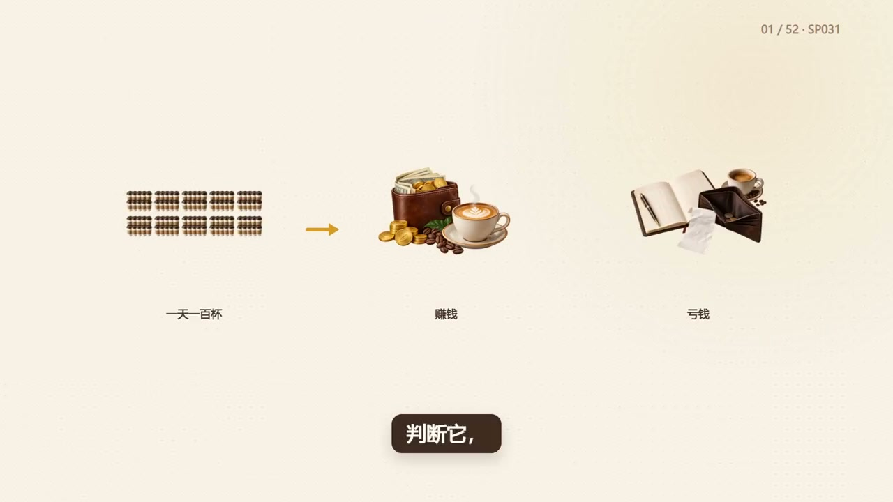
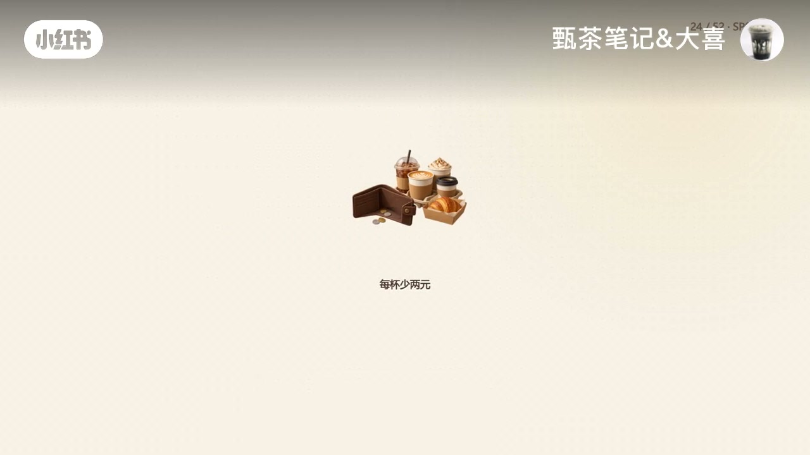
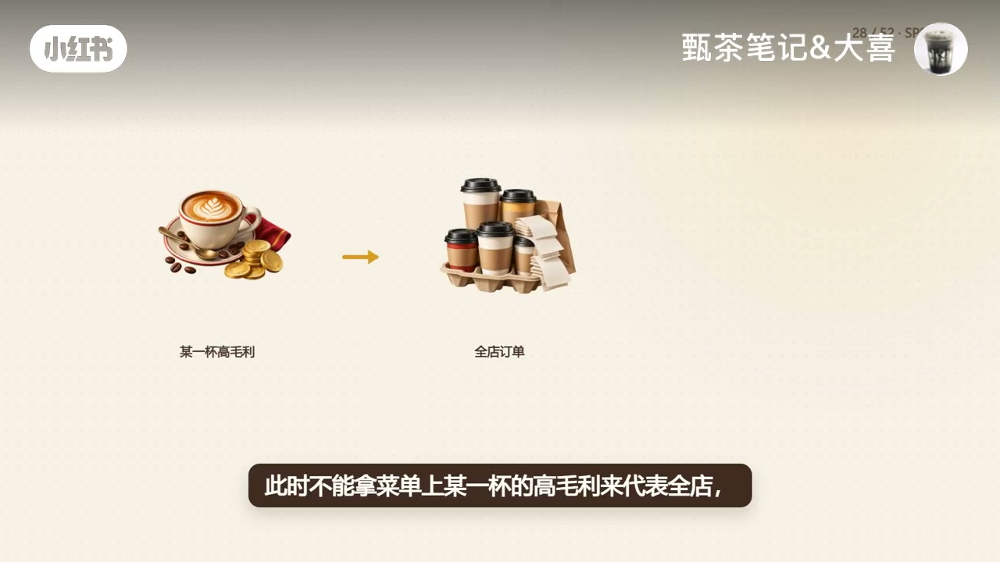
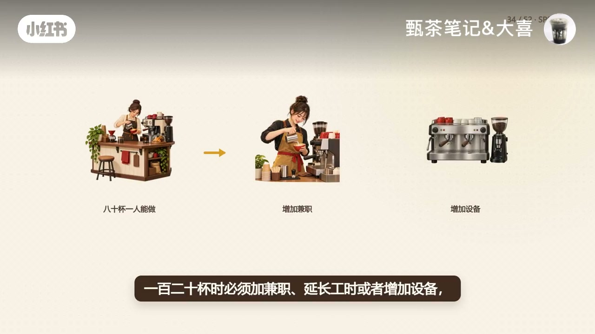
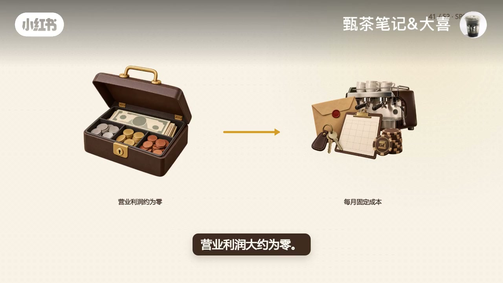

内容要点
小红书账号「甄茶笔记&大喜」用「一天卖一百杯」开场，却不急着庆祝忙碌，而是把问题改写成：减掉变动成本以后，每杯还能留下多少钱去覆盖房租和基础人工。示意账用每月固定成本两万五千元、每杯贡献十元，算出月保本两千五百杯、日均至少八十四杯；贡献掉到八元时日均门槛约一百零五杯。随后提醒产品结构要加权、产能跨台阶会让保本线失效，并分清「保本不是赚钱」。开店前别抄别人的百杯答案，而要拆清成本、对照商圈需求与门店产能。下列实录按时间线展开；数字均为作者示意，非某一门店实测。
知识结构
一百杯只是销量标签；画面用保本线区分「看起来很忙」与真正进入利润区。
贡献=实际收入−变动成本；少卖一杯钱会不会跟着少，是区分变动/固定的快测。
基础工资相对固定，加班临时工会跨量跳升；分不清就拆成「不开单也付」与「多一单才增」。
25000÷10=2500杯/月≈日均84杯；贡献8元→约105杯；少留2元≈多21杯/日。
不能拿一杯高毛利代表全店；高贡献卖得少、低贡献外卖多，平均贡献掉、保本杯量升。
80杯一人能做、120杯要加兼职或设备时，固定成本已跨台阶；还要问需求与高峰接单。
平衡点上营业利润约零；要利润就要抬杯量；别抄「一天一百杯」，拆成本并对照需求产能。
一天一百杯也可能亏钱。先算加权后的单杯贡献能否覆盖固定成本，再核对商圈需求与产能台阶；保本只是利润为零，不是开始赚钱。算不清就不要把希望压在开业后再卖更多。
00:00–00:30开场：一天一百杯，先看保本线而不是看起来忙
视频标题卡直接抛出场景：你的咖啡店一天卖一百杯——然后立刻把「赚钱」和「亏钱」两套画面并置。作者没有用百杯销量当成功证明，而是把判断标准推到保本线：示意画面写出每月两千五百杯、折算日均大约八十四杯；并强调这条线决定的不是店里看起来有多忙，跨过它之后才真正进入利润区。
这一段口播几乎没有进入 Whisper（约 00:01–00:30 为视觉讲解），但画面字幕把「销量标签≠利润」钉得很清楚。随后口播从「减掉变动成本」接上，开始定义单杯贡献。

00:30–00:57单杯贡献：减掉变动成本，才谈得上覆盖房租人工
作者把「留下」说成：减掉这杯订单带来的变动成本以后，还能拿去覆盖房租、基础人工等固定支出的钱。最简单的判断方法是——如果今天少卖这一杯，这笔钱会不会跟着少。
跟着少的通常进变动成本：咖啡豆、牛奶、糖浆、杯盖、纸袋，以及按订单发生的平台费用和优惠。房租、基础排班、软件和设备折旧，在当前经营规模内通常不会因为少卖一杯立刻消失，可以先放进固定成本。（Whisper 原词「电动成本」，据画面校正为「变动成本」。）
00:57–01:15人工和水电不能永远只贴一个标签
分完大类之后，作者立刻补刀：人工和水电不能永远只贴一个标签。基础工资可能相对固定，但加班和临时工会在订单跨过某个量以后突然增加；水电也可能同时有基础部分和随营业量变化的部分。
分不清时，至少先拆成「不开单也要付」和「多一单才增加」两部分，不要把整笔费用随手塞到一边——否则后面的保本杯量会从一开始就算歪。
01:15–01:45示意账：两万五除以十元，日均至少八十四杯
回到例子：每月固定成本两万五千元，每杯平均贡献十元，两万五除以十就是每月两千五百杯；开三十天日均约八十三点三杯，实际计算至少要按八十四杯看。
如果一杯实际只能留下八元，保本量变成三千一百二十五杯，日均约一百零四点二杯，至少按一百零五杯看。每杯只少留下两元，日均保本线就大约多二十一杯——价格少两元看起来不大，落到一个月可能是完全不同的客流要求。文中数字均为作者示意算例。

01:45–02:15产品结构一变，盈亏平衡点就要重算
咖啡店很少只卖一种产品：美式、拿铁、特调、甜点、自提和外卖，每一种订单的实际收入和变动成本都可能不同。此时不能拿菜单上某一杯的高毛利来代表全店，也不能把所有杯子都当成一样值钱。（Whisper「权电」据画面校正为「全店」。）
更稳妥的做法是按真实或保守预计的销售结构，算加权后的平均贡献。高贡献产品卖得少、低贡献外卖单卖得多，整体平均贡献下降，保本杯量也会被抬高；产品结构一变，盈亏平衡点就要重算。

02:15–02:50纸面答案的前提：产能跨台阶，旧保本线会失效
算出的杯数还只是纸面答案。本量利分析有一个前提：售价、单杯变动成本和固定成本，要在当前经营区间里大致稳定。如果八十杯时一个人能做，一百二十杯时必须加兼职、延长工时或者增加设备，固定成本就已经跨台阶；这时还拿原来的保本线判断，数字会偏得很远。
所以算完以后还要问两个现实问题：这个位置有没有足够需求支撑这条保本线；人员、设备和出品速度能不能在高峰期接住这些订单。如果答案是否定的，先改店型、成本或产品结构，而不是把希望全部压在开业以后再想办法卖更多。（「改电行」据画面校正为「改店型」。）

02:50–03:48保本不是赚钱；别抄别人的「一天一百杯」
最后还要分清：保本不是赚钱。画面写明盈亏平衡点只表示在这套假设下营业利润约为零——固定成本刚被贡献盖住。若还希望每月获得一万元经营利润，目标就不是两千五百杯；示意画面给出约三千五百杯量级（按两万五加一万再除以每杯十元理解，仍属作者算例）。
Whisper 在约 02:52 后几乎失效（末段仅识别出残片「A S」），但画面字幕继续收束：开店前真正要做的不是抄别人「一天卖一百杯」的答案，而是拆清固定与变动成本，换成日均杯量，再和商圈需求及门店产能对照。片尾留下互动：你的日均保本杯量是多少？

详细文字转录（69段）
以下内容按 Whisper 原始分段完整呈现，可能包含识别误差与繁体字形；正文已按画面与语境校正（如「变动成本」「全店」「改店型」），转录区保持原样以便核对。末段残片「A S」为识别失败。
你的咖啡店一天賣100杯
減掉這杯訂單帶來的變動成本以後
還能拿去覆蓋房租、基礎人工等固定支出的錢
最簡單的判斷方法是
如果今天少賣這一杯
這筆錢會不會跟著少
咖啡豆、牛奶、糖漿、杯蓋、紙袋
按訂單發生的平台費用和優惠
通常會跟銷量變化
應放進電動成本
房租、基礎排班、軟體和設備折舊
在當前經營規模內
通常不會因為少賣一杯立刻消失
可以先放進固定成本
但人工和水電不能永遠只貼一個錶錢
基礎工資可能相對固定
加班和臨時工卻會在訂單跨過某個量以後突然增加
水電也可能同時有基礎部分和隨營業量變化的部分
分不清時
至少先拆成不開單也要付的部分
和多益單才增加的部分
不要把整筆費用隨手塞到一邊
現在回到剛才的例子
每月固定成本25000元
每杯平均貢獻10元
25000除以10就是每月2500杯
開30天日均83.3杯
實際計算至少要按84杯看
如果一杯實際只能留下8元
保本量就變成3125杯
日均約104.2杯
實際至少要按105杯看
每杯只少留下2元
日均保本現就多了21杯左右
價格少2元看起來不大
落到一個月可能就是完全不同的客流要求
不過咖啡店很少只賣一種產品
美式、拿鐵、特調、甜點、糖食、自提和外賣
每一種訂單的實際收入和變動成 Glass 成本都可能不同
此時不能拿菜單上某一杯的高毛利來代表權電
也不能把所有杯子都當成一樣值錢
更穩妥的做法是按真實或保守預計的銷售結構
算加全後的平均貢獻
比如高貢獻產品賣得少
低貢獻外賣單賣得多
整體平均貢獻就會下降
保本杯量也會太高
產品結構一變
盈灰平衡點就要重算
算出的杯數還只是紙面答案
因為本量力分析有一個前提
售價、單杯變動成本和固定成本
要在當前經營區間裡大致穩定
如果80杯時一個人能做
120杯時必須加兼職、延長工時或者增加設備
固定成本就已經跨台階了
這時還拿原來的保本線判斷
數字會偏得很遠
所以算完以後
還要問兩個現實問題
這個位置有沒有足夠需求支撐這條保本線
你的人員、設備和出品速度
能不能在高峰期接觸這些訂單
如果答案是否定的
先改電行、成本或產品結構
而不是把希望全部壓在開業以後再想辦法賣更多
最後還要分清
保本不是賺錢
A S...